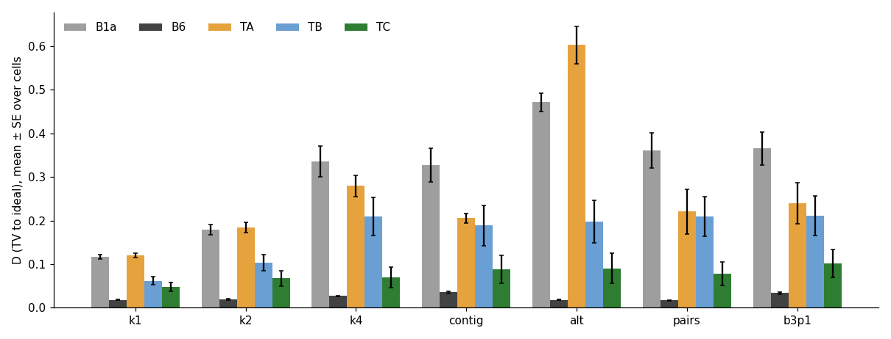
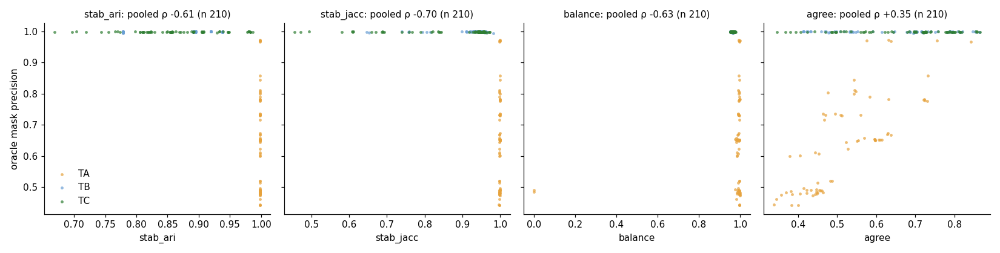
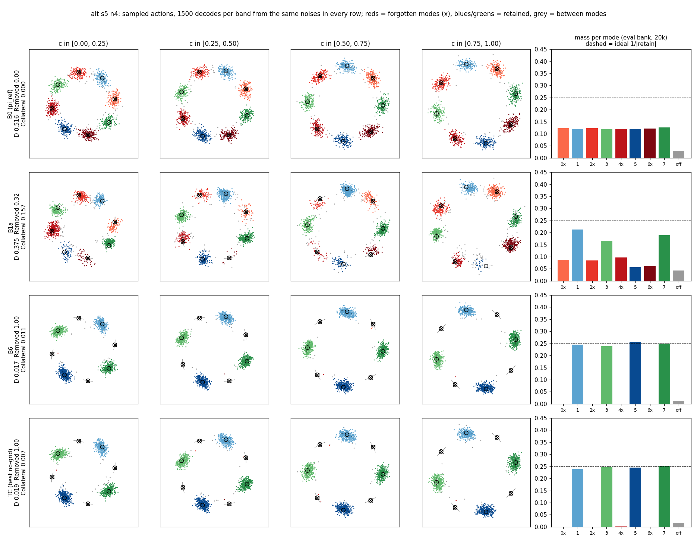
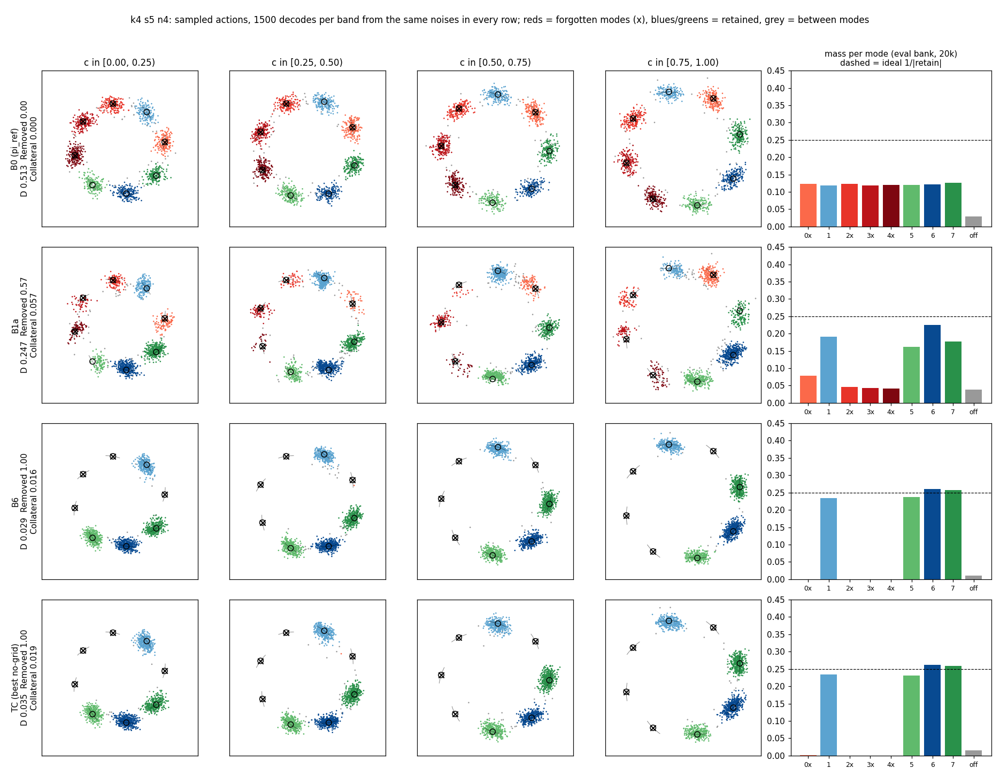

TRKNG: behaviour tracks without a condition grid
Confirmation stage, seeds 5–9, 7 settings × 10 cells. Branch art/trkng. Pre-registration: docs/TRKNG_PREREG.md.
Verdict
Best no-grid builder: TC. The pre-registered tests give the same result in all 7 settings.
(a) TC vs B6, equivalence within 0.01: NOT EQUIVALENT in 7 of 7. TC's D is higher by +0.030 (k1) to +0.073 (alt).
(b) TC vs B1a, lower by more than 2 SE: PASS in 7 of 7. ΔD ranges from −0.069 (k1) to −0.381 (alt).
(c) TC mask precision ≥ 0.95: PASS in 7 of 7. Mean precision is 0.999 in every setting. explore/TRKNG/analyze_out.txt
Question and setup
B6 removes forgotten behaviours by building tracks on a grid over the condition c. pi0.5 conditions on images and language, so no such grid exists there.
TRKNG asks whether tracks built from the policy's own activations, with no grid over c, can replace B6's mask.
Each builder takes N = 8,000 decodes, reads the blocks.2 activations at the last Euler step (f=s19), and flags the group that holds a logged negative. The kept pool samples feed B6's frozen training step unchanged.
TA = k-means, k chosen by silhouette (TA-f=s19-N8000). TB = PCA-32 + HDBSCAN, typicality filter q 0.9 (TB-f=s19-mcs_frac=0.01-min_samples=10-typ=0.9-N8000). TC = kNN graph, edges shorter than τ = 1.75 × the median negative distance, typicality filter (TC-f=s19-knn=10-tau_mult=1.75-typ=0.9-N8000).
The configs were frozen on dev seeds 0–2 before any seed 5–9 cell ran. TC was named the best builder for tests (a)–(c) in advance. explore/TRKNG/frozen.json, docs/TRKNG_PREREG.md
Results per setting
Means over the 10 (seed, npm) cells per setting. "Lower than" counts the cells where the arm's D is below the baseline's. B6 and B1a numbers come from E4, as pre-registered.
| Setting | Arm | Mask prec | Mask rec | D | Removed | Collateral | Lower than B6 | Lower than B1a |
|---|---|---|---|---|---|---|---|---|
| k1 | B6 | 1.000 | 0.862 | 0.018 | 0.993 | 0.012 | — | 10 of 10 |
| k1 | B1a | — | — | 0.117 | 0.508 | 0.063 | — | — |
| k1 | TA | 0.481 | 0.690 | 0.120 | 0.662 | 0.093 | 0 of 10 | 6 of 10 |
| k1 | TB | 0.999 | 0.640 | 0.062 | 0.658 | 0.015 | 0 of 10 | 10 of 10 |
| k1 | TC | 0.999 | 0.749 | 0.048 | 0.767 | 0.015 | 1 of 10 | 10 of 10 |
| k2 | B6 | 1.000 | 0.858 | 0.019 | 0.996 | 0.012 | — | 10 of 10 |
| k2 | B1a | — | — | 0.180 | 0.474 | 0.093 | — | — |
| k2 | TA | 0.584 | 0.718 | 0.184 | 0.638 | 0.136 | 0 of 10 | 5 of 10 |
| k2 | TB | 0.999 | 0.635 | 0.104 | 0.655 | 0.018 | 0 of 10 | 9 of 10 |
| k2 | TC | 0.999 | 0.784 | 0.067 | 0.818 | 0.019 | 0 of 10 | 10 of 10 |
| k4 | B6 | 1.000 | 0.857 | 0.027 | 0.995 | 0.021 | — | 10 of 10 |
| k4 | B1a | — | — | 0.336 | 0.395 | 0.074 | — | — |
| k4 | TA | 0.742 | 0.796 | 0.279 | 0.660 | 0.172 | 0 of 10 | 7 of 10 |
| k4 | TB | 0.999 | 0.643 | 0.210 | 0.608 | 0.019 | 0 of 10 | 9 of 10 |
| k4 | TC | 0.999 | 0.859 | 0.070 | 0.910 | 0.025 | 0 of 10 | 10 of 10 |
| contig | B6 | 1.000 | 0.857 | 0.035 | 0.998 | 0.030 | — | 10 of 10 |
| contig | B1a | — | — | 0.328 | 0.407 | 0.071 | — | — |
| contig | TA | 0.815 | 0.889 | 0.205 | 0.809 | 0.138 | 0 of 10 | 9 of 10 |
| contig | TB | 0.999 | 0.672 | 0.188 | 0.666 | 0.025 | 0 of 10 | 9 of 10 |
| contig | TC | 0.999 | 0.848 | 0.089 | 0.882 | 0.029 | 2 of 10 | 9 of 10 |
| alt | B6 | 1.000 | 0.863 | 0.018 | 0.994 | 0.011 | — | 10 of 10 |
| alt | B1a | — | — | 0.471 | 0.166 | 0.144 | — | — |
| alt | TA* | 0.487 | 0.712 | 0.602 | 0.005 | 0.440 | 0 of 8 | 0 of 8 |
| alt | TB | 0.999 | 0.661 | 0.198 | 0.629 | 0.012 | 2 of 10 | 10 of 10 |
| alt | TC | 0.999 | 0.832 | 0.091 | 0.851 | 0.012 | 2 of 10 | 10 of 10 |
| pairs | B6 | 1.000 | 0.859 | 0.017 | 0.996 | 0.013 | — | 10 of 10 |
| pairs | B1a | — | — | 0.361 | 0.353 | 0.051 | — | — |
| pairs | TA | 0.700 | 0.800 | 0.220 | 0.643 | 0.085 | 0 of 10 | 9 of 10 |
| pairs | TB | 0.999 | 0.649 | 0.210 | 0.603 | 0.012 | 0 of 10 | 10 of 10 |
| pairs | TC | 0.999 | 0.853 | 0.077 | 0.879 | 0.013 | 1 of 10 | 10 of 10 |
| b3p1 | B6 | 1.000 | 0.857 | 0.034 | 0.996 | 0.026 | — | 10 of 10 |
| b3p1 | B1a | — | — | 0.365 | 0.348 | 0.076 | — | — |
| b3p1 | TA | 0.687 | 0.784 | 0.240 | 0.597 | 0.115 | 1 of 10 | 9 of 10 |
| b3p1 | TB | 0.999 | 0.648 | 0.212 | 0.606 | 0.019 | 2 of 10 | 10 of 10 |
| b3p1 | TC | 0.999 | 0.822 | 0.101 | 0.834 | 0.019 | 3 of 10 | 10 of 10 |
explore/TRKNG/analyze_out.txt (from analyze.py confirm); per-cell rows in explore/TRKNG/cells_confirm.csv. * alt TA: D, Removed, Collateral over 8 cells (see Issues).
TC's gap to B6 comes from bad samples it keeps, not from good samples it drops. TC keeps 2.9–8.7% bad samples; B6 keeps 0–0.2%. analyze_out.txt, "Kept bad" column
More negatives help TC most. Its D falls from 0.110 at npm 1 to 0.045 at npm 4; B6 stays at 0.024. analyze_out.txt, npm table
D per setting

Label-free checks against oracle precision

| Check | Pooled ρ (n) | TA ρ | TB ρ | TC ρ |
|---|---|---|---|---|
| stab_ari | −0.61 (210) | −0.07 | +0.13 | +0.26 |
| stab_jacc | −0.70 (210) | +0.26 | −0.26 | −0.00 |
| balance | −0.63 (210) | +0.05 | −0.11 | +0.04 |
| agree | +0.35 (210) | +0.81 | −0.29 | −0.06 |
explore/TRKNG/analyze_out.txt, checks table (Spearman ρ against oracle precision)
No check ranks masks by precision within TC. Within-TC ρ lies between −0.06 and +0.26.
The pooled correlations come from TA. TA is stable (stab_ari 0.998) but imprecise (0.642), so stability and balance correlate negatively with precision across builders. The dev stage showed the same signs.
Agreement with the other builders tracks precision within TA (ρ +0.81) only.
Rendered outputs

What you see. The forgotten modes 0, 2, 4, 6 alternate with retained ones, so every forgotten mode borders two retained neighbours. B0 puts about 1/8 of its mass in each mode. B1a thins the forgotten modes but leaves 0.06–0.10 mass in each, and it drains mode 5 to 0.06 (Removed 0.32, Collateral 0.157). B6 and TC both empty the forgotten modes in all four bands, and every retained mode sits near the ideal 0.25. TC's D here is 0.019 against B6's 0.017. This cell is one of TC's best: its alt mean is 0.091 over 10 cells.

What you see. The forgotten modes are 0, 2, 3, 4, a block of three plus one. B1a keeps 0.04–0.08 mass in each forgotten mode and shifts mass between the retained modes (Collateral 0.057). B6 and TC give nearly identical pictures: forgotten modes empty, retained modes 1, 5, 6, 7 between 0.23 and 0.26. TC's D is 0.035 against B6's 0.029; its k4 mean is 0.070 over 10 cells.
Recommendation
Carry TC to pi0.5. It needs no grid over c, it never flags a retained behaviour (precision 0.999 in every setting), and it beats B1a in 69 of 70 cells. It does not match B6: TC's D is 0.03–0.07 higher, because it keeps 3–9% bad samples where B6 keeps almost none. On pi0.5, give TC as many negatives per mode as possible, since its D halves from npm 1 to npm 4. Do not use the label-free checks to tune τ; none of them predicts TC's precision. analyze_out.txt
Issues
- Interrupted first run. The first queue run on the login node was cancelled by mistake at 126/284 units. SLURM job 4069868 resumed it; the queue skips finished units, so no unit ran twice.
- Job 4069868 shows FAILED. Its last step called
analyze.pywithout the stage argument. The queue itself finished.analyze.py confirmthen ran separately. explore/TRKNG/logs/slurm_4069868.out - k1 s9 n1 rerun. On node grogu-1-20 the masks unit failed its check that the hooked decode reproduces
pi_ref.sample, and the cell's three TC/TB/TA trainings timed out waiting for the masks. Job 4070546 reran the same frozen units on grogu-0-25, where they passed in 5 minutes. explore/TRKNG/logs/k1_s9_n1.log, slurm_4070546.out - alt TA, 2 cells without a trained policy. In alt s5 n4 and alt s9 n4, TA flagged all 60,000 pool samples (precision 0.485 and 0.491, recall 1.0). The kept set is empty, so B6's training step has nothing to train on and stops. The pre-registration has no rule for an empty mask; this report follows its rule "whatever is finished is reported, with n" and reports alt TA with n = 8. The tests use only TC, so they are unaffected. explore/TRKNG/results/alt/s5_n4/masks_TA_N8000.json, s9_n4/masks_TA_N8000.json
- Time box. The pre-registration expected tier 3 (TA and TB at npm 1) to run out of the 8-hour box with 4 workers. With 32 workers on SLURM every tier finished, so all three builders cover all 70 cells (except the 2 above).
- Rendered policies are retrained. The figures retrain each policy with its frozen config on SLURM node grogu-0-25 (
explore/TRKNG/render.py, job log inexplore/TRKNG/logs/). TC reproduces its committed D exactly in both cells, and B6 does on alt s5 n4. B6 on k4 s5 n4 differs from E4 by 0.0014 (0.0292 vs 0.0278), and B1a by 0.0011 (alt) and 0.0012 (k4). These exceed the pre-registration's 1e-4 match rule; together with the k1 s9 n1 decode check, they point to floating-point results that vary by node. The figure labels show the retrained numbers; the tables and tests use the committed JSONs. docs/TRKNG_report/render_check_alt_s5_n4.json, render_check_k4_s5_n4.json